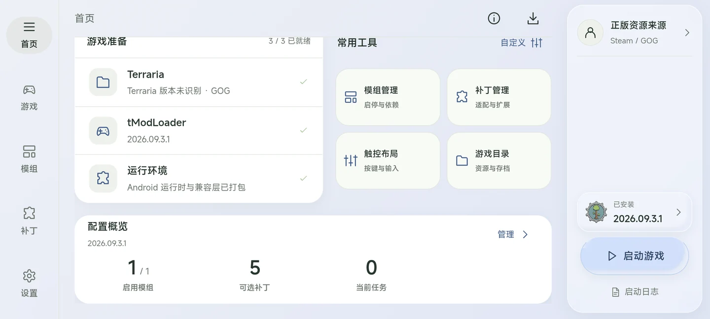

导入游戏资源
支持 Steam ZIP、GOG Linux 安装包和本机 Terraria PE 资源转换。
在 Android 上启动 tModLoader。导入你拥有的 Terraria 游戏资源，安装模组，再用可自定义的触控布局开始冒险。
Android 9+ · ARM64 · 开发中

支持 Steam ZIP、GOG Linux 安装包和本机 Terraria PE 资源转换。
并行安装多个 tModLoader 版本，导入 .tmod 模组，检查依赖并保存模组预设。
内置双摇杆和触摸菜单，可在布局编辑器中调整控件位置。
适用于 Android 9 及以上的 ARM64 设备。启动游戏需要导入你拥有的 Terraria 资源。